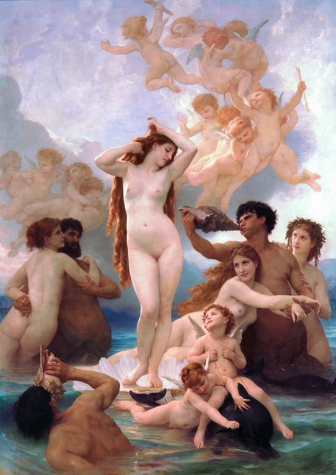

Nữ thần Aphrodite, nữ thần Tình yêu và Sắc đẹp, chẳng được thần Zeus ban cho một đặc ân gì, chẳng có vũ khí gì đặc biệt nhưng lại là một vị nữ thần có sức mạnh khác thường. Cả thế giới Olympe cho đến thế giới loài người trần tục đoản mệnh đều phải khuất phục trước quyền lực của nàng, quỳ gối nộp mình dưới chân nàng. Một chuyện xưa kể, nàng là con của Zeus và tiên nữ Dioné. Nhưng xem ra chuyện này không được đông đảo mọi người chấp nhận. Người Hy Lạp xưa kia vẫn quen coi quê hương của Aphrodite ở đảo Chypre (Do đó Aphrodite còn có biệt danh là Cypris, Chypride) vì nàng sinh ra ở vùng biển của đảo Chypre.

Nữ thần APHRODITE sinh ra trên biển.
Thần Cronos trong khi thực hiện mưu đồ lật đổ vua cha Ouranos đã dùng lưỡi hái chém chết Ouranos. Máu của Ouranos từ trời cao nhỏ xuống vùng biển Chypre hòa tan vào những con sóng bạc đầu. Và từ một đám bọt sóng trong như ngọc trắng như ngà ấp ủ được tinh khí của trời biển giao hòa đã nảy sinh ra nữ thần Aphrodite. Aphrodite ra đời từ một đám bọt của một con sóng trên mặt biển. Nàng hiện ra trên mặt biển trong nhịp ru lâng lâng của sóng và tiếng ca dìu dặt của gió biển Nam. Biết diễn tả thế nào cho đúng, cho hết được vẻ đẹp của Aphrodite, vị nữ thần Sắc đẹp. Chỉ có thể nói đó là vẻ đẹp bao la, lồng lộng của bầu trời xanh, là ánh sáng trong trẻo, ngời ngợi tràn lên những áng mây trắng muốt đang lững thững êm trôi, là vẻ đẹp mênh mông căng đầy. Tóm lại, đó là vẻ đẹp bao la, bát ngát, vô tư bình thản của Trời và Biển, vẻ đẹp của Tự nhiên đang sinh thành, đang sống, đang dạt dào sức sống và luôn luôn khát khao được sống.
Aphrodite ra đời. Nàng từ đám bọt bể hiện lên hiện lên dần, tươi tắn, ngời ngợi như một đóa hoa xòe nở. Sóng và gió dịu hiền đưa nàng tới hòn đảo Chypre. Các nữ thần Heures-Thời gian đã chờ sẵn để đón nàng. Họ mặc cho nàng một tấm áo vàng rượi mịn như da trời, mỏng như mây trắng. Họ đội cho nàng một vòng hoa thơm ngát lên đầu và đưa nàng lên cung điện Olympe. Các vị thần đều rất vui mừng và sung sướng được đón nhận vào thế giới vĩnh hằng của mình một nữ thần có sắc đẹp tuyệt diệu và tươi trẻ như thế.
Người xưa kể lại, mỗi khi xuống trần, nữ thần Aphrodite, với dáng người thanh tao, với khuôn mặt diễm lệ và dáng đi khoan thai, duyên dáng đã làm cho trời đất tưng bừng, rạng rỡ hẳn lên như đổi sắc thay da. Mái tóc vàng óng ả búi cao để lộ chiếc cổ cao cao, đầy đặn, tỏa ra hương thơm ngào ngạt. Mỗi bước đi của nàng tới đâu là làm cho mặt đất ở đó nở ra muôn hồng nghìn tía. Các nữ thần Duyên sắc-Charites và các nữ thần Heures-Thời gian luôn luôn đi theo bên nàng để chăm sóc đến trang phục và sắc đẹp của nàng. Chim chóc từng đàn bay lượn trên đầu nàng ríu ra ríu rít, nô đùa, vờn lướt trước mặt nàng, bên vai nàng. Bướm dập dờn tung tăng quanh quẩn theo những bước đi của nàng. Những loài thú dữ như hổ, báo, gấu, sói... lặng lẽ đến ngồi bên đường đi của nàng như muốn chiêm ngưỡng sắc đẹp diệu kỳ của một vị nữ thần đẹp có một không hai của thế giới thần thánh. Sau đó, chúng lặng lẽ bước đi nối gót theo nàng.
Cả thế giới thần thánh và loài người đều phải khuất phục trước quyền lực của Aphrodite vì thần thánh và loài người chẳng thể sống mà không có tình yêu, chẳng thể sống mà không rung động trước sắc đẹp, nhắm mắt trước cái đẹp, và hơn nữa lại chẳng thể yêu cái xấu, cái dị dạng, dị hình. Tuy thế cũng có một, hai vị thần bất tuân theo quyền lực của Aphrodite. Nữ thần Athéna chẳng yêu đương cũng chẳng chồng con. Các nữ thần Hestia, Artémis cũng vậy. Còn các nam thần? Có lẽ không vị nào dám hiên ngang đương đầu, đối chọi lại với quyền lực của Aphrodite. Quyền lực của Aphrodite biểu hiện ở chiếc thắt lưng của nàng. Đây là một chiếc thắt lưng huyền diệu. Hễ ai thắt nó trong người thì có phép làm cho người mình yêu trở thành người yêu của mình. Hễ ai thắt nó trong người thì có phép làm cho người mình yêu vốn kiêu kỳ hoặc lạnh nhạt, đã từng làm cho mình đêm năm canh, ngày sáu khắc thao thức, trằn trọc tơ tưởng, tưởng tơ thì bỗng chốc trở thành người yêu của mình, người yêu của mình đích thực, yêu mình say đắm, đam mê. Nữ thần Aphrodite đã cho chàng Paris mượn chiếc thắt lưng này, nhờ đó Paris đã chinh phục được nàng Hélène, vợ của Ménélas ở vương triều Sparte trên đất Hy Lạp. Vì lẽ đó mà người Hy Lạp phải kéo quân sang đánh thành Troie để giành lại nàng Hélène.
Aphrodite có nhiều cuộc tình duyên với thần thánh và, hơn nữa, cả với người trần. Chồng nàng là Héphaïstos, vị thần Thợ rèn Chân thọt. Nhưng nàng chẳng chung thủy với chồng mà lại đi lăng nhăng với thần Chiến tranh-Arès. Có lần đã bị Héphaïstos chăng lưới sắt chụp xuống bắt quả tang, gây ra một vụ phiền hà trong thế giới thần linh. Rồi Aphrodite lấy Arès. Đôi vợ chồng này sinh được năm con: một gái là thần Hài hòa Harmonie; và bốn trai là Éros, Antéros, Déimos và Phobos. Và còn mối tình với Dionysos, với Hermès, với một người trần thế Anchise. Như vậy, Aphrodite là vị nữ thần của tình yêu say đắm, tình yêu dục vọng thường làm cho con người ta mất tỉnh táo đến nỗi nhiều khi xảy ra điều tiếng. Vì thế người Hy Lạp xưa kia, những nhà triết học thế kỷ V-IV TCN, phân chia ra hai loại nữ thần Aphrodite. Một là Aphrodite Pandémos tượng trưng cho tình yêu của những cảm xúc cao thượng, tình yêu có tâm hồn, có lý tưởng. Người ta lại thêm cho Aphrodite một định ngữ: Anadyomène, Aphrodite Anadyomène nghĩa là Aphrodite từ biển sinh ra. Trước khi được gia nhập vào thế giới Olympe, Aphrodite là vị nữ thần của sự phì nhiêu. Những loại quả có nhiều hạt tượng trưng cho sự phát triển, sự phong phú như quả lựu, quả anh đào, quả táo thường được dâng cúng cho Aphrodite. Người ta cũng đã từng tôn thờ Aphrodite như là một nữ thần Biển, người bảo hộ cho sự giao lưu trên mặt biển được thuận buồm xuôi gió, vạn sự bình an. Tàn dư của tôtem giáo trong việc thờ cúng Aphrodite còn ở lễ hiến tế các con vật mắn đẻ như chim sẻ, thỏ, bồ câu. Quê hương của Aphrodite ở đảo Chypre vì thế đảo Chypre là một trong những trung tâm thờ cúng nữ thần Aphrodite với những nghi lễ trọng thể nhất. Trên bán đảo Hy Lạp cũng có nhiều nơi thờ cúng nữ thần Aphrodite như Delphes, Corinthe. Xưa kia những thiếu nữ Hy Lạp đi dự lễ cưới thường dâng cúng cho nữ thần Aphrodite những chiếc thắt lưng do chính bàn tay mình dệt ra dường như muốn được nữ thần ban cho quyền lực mầu nhiệm ở chiếc thắt lưng của nữ thần, để mình đạt được những ước mơ trong con đường tình duyên, hạnh phúc đôi lứa. Trong văn học thế giới điển tích-thành ngữ Chiếc thắt lưng của Aphrodite hoặc Vénus ám chỉ một vật, một chuyện, một sự việc nào đó có khả năng làm say mê con người, chinh phục tình cảm của con người. Trong tập tục tôn giáo, nghi lễ thờ cúng nữ thần Aphrodite xưa kia có tục lệ những thiếu nữ xinh đẹp nhất phải hiến thân cho những người đàn ông để chứng tỏ quyền uy của nữ thần Aphrodite, để những người thiếu nữ được hưởng quyền sử dụng trinh tiết của mình. Nghi lễ tôn giáo nhục cảm này diễn ra trong đền thờ nữ thần Aphrodite mang tính chất thiêng liêng, cao cả. Những người đàn ông được dự cuộc “hành lễ” này phải nộp một khoản tiền để bỏ vào quỹ của đền thờ. Engels coi đó là hình thức mãi dâm đầu tiên trong lịch sử119. Không phải chỉ riêng ở Hy Lạp chúng ta mới thấy có tập tục này. Những người Babylone, những người Armenia cổ xưa cũng đều có những tập tục nghi lễ tôn giáo nhục cảm như vậy.
Đối với người Hy Lạp xưa kia, Aphrodite là vị nữ thần thể hiện vẻ đẹp nhục cảm của người phụ nữ, một vẻ đẹp hấp dẫn nhất trong mọi vẻ đẹp của thế gian. Khác hẳn với vẻ đẹp “liễu yếu đào tơ”, “yểu điệu thục nữ” mềm yếu, thướt tha, ẩn giấu, kín đáo của phương Đông, châu Á chúng ta, vẻ đẹp của Aphrodite là vẻ đẹp phô diễn, biểu hiện sự mềm mại uyển chuyển của đường nét, sự đầy đặn, nở nang, khỏe khoắn, cân đối của thân hình, Aphrodite là vị nữ thần của thiên hướng tình dục-thẩm mỹ của con người. Những bức tượng Aphrodite của thời cổ đại thường được các nghệ sĩ thể hiện khỏa thân hay nửa khỏa thân diễn tả vẻ đẹp lý tưởng về người phụ nữ, qua đó dẫn đến, gợi đến một ý niệm về sự trong sáng, thanh cao, hài hòa, hoàn thiện. Và thật lạ lùng, những bức tượng thần đó chẳng có gì là thần thánh, thoát tục, siêu nhiên cả. Vì lẽ đó cho nên ngày nay ở châu Âu người ta thường gọi những bức tranh, bức tượng phụ nữ khỏa thân là Vénus.